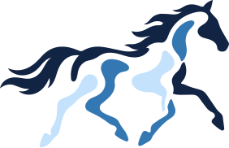

You don't need an account to look around.
Browsing is open to everyone — always has been. An account just saves you typing.
- Apply without filling the same form twice
- Track where each application stands
- Get told when a matching role is posted
- Be found by the recruiting team for roles that never get posted

Welcome back.
Sign in to pick up where you left off.
or
New here? Create an account — it takes about a minute.
Hiring instead? Request talent.